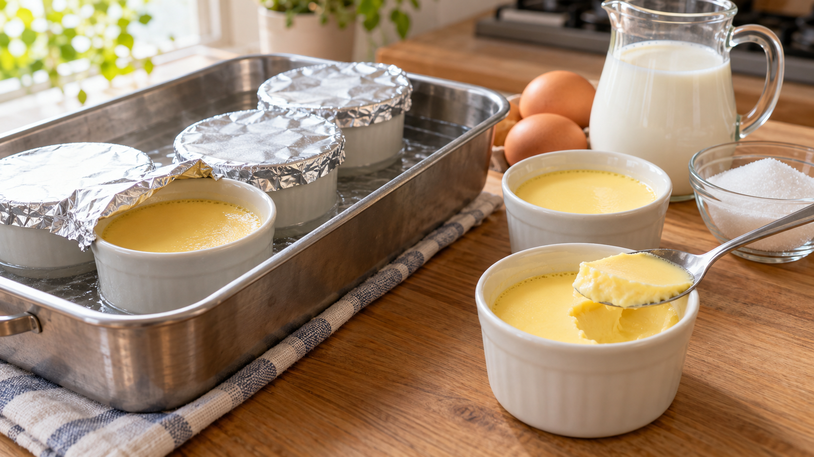

砂糖はカスタードを固まりにくくする｜卵たんぱく質と水の取り合い
プリンを作るとき、砂糖を減らしたら食感も変わるのだろうか。甘さだけを決める材料に見えるけれど、砂糖は卵の固まり方にも関わっている。
砂糖を加えた卵液は、固まり始める温度が高くなる傾向がある。 砂糖は甘みだけでなく、プリンの硬さを考える手がかりにもなる。ただし、砂糖の量だけで仕上がりは決まらない。
卵を温めると、中のたんぱく質がつながり、水分を含んだまま形を保つようになる。砂糖はその水分を引きつける。卵の周りの水の状態が変わるため、同じように温めても固まり方が変わる、と考えられている。これは砂糖と卵が「水を取り合う」という見方だ。
卵液を加熱した研究では、砂糖の割合が高いほど固まり始める温度が上がる傾向が確認された。別の研究では、砂糖を加えた卵は、加熱後の硬さが下がった。ただし、卵白、卵黄、全卵で変化の大きさは同じではない。農林水産省が紹介するプリンの例でも、砂糖入りは砂糖なしより柔らかく仕上がっている。卵液の研究・卵の硬さを調べた研究・農林水産省の解説
ここから分かるのは、砂糖が卵の固まり方に影響することまで。家庭のプリンがどれだけ柔らかくなるかは、卵と牛乳の割合、型の大きさ、火の入り方でも変わる。好みの硬さを考えるときは、まず配合と加熱をそろえ、砂糖だけに結果を任せないほうがよい。
フライパンで作る蒸しプリン（4個分）
農林水産省のプリンの卵液と湯せんの手順を使う。カラメルは省き、卵液そのものの食感を味わう。
材料は卵3個、牛乳300mL、グラニュー糖大さじ3、バニラエッセンス2〜3滴。耐熱のプリン型を4個用意する。
- 卵を泡立てないように溶き、砂糖を混ぜる。牛乳を少しずつ加え、バニラエッセンスも混ぜてから、ざるでこして型へ分ける。型の口をアルミホイルで覆う。
- 深めのフライパンで湯を沸かし、型を並べる。湯の深さは型の高さの半分ほどにする。ふたをして極弱火で約10分加熱し、火を止めて約10分置く。
- 時間は目安なので、中心まで火が通ったことを温度計で確かめる。卵を使うカスタード類についての厚生労働省の衛生資料に沿い、中心を75℃以上で1分以上保つ。届かなければ湯せんで追加加熱する。粗熱を取り、冷蔵庫で冷やす。
卵と液体を混ぜて固める別の料理でも、まずその割合を決めてから、砂糖の有無と火の通し方を見ると考えやすい。同じ「卵が固まる」料理でも材料が違えば仕上がりは変わるので、プリンの結果をそのまま当てはめない。
砂糖はプリンの甘さと固まり方の両方に関わる。次に作るときは、決めた配合を守り、火の入り方を確かめよう。